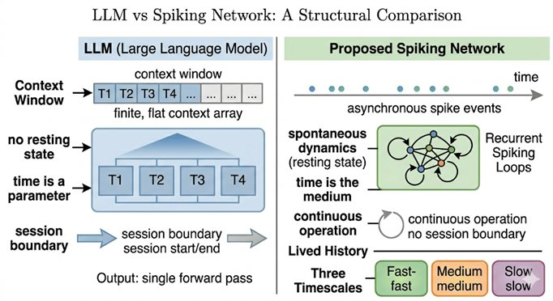

Part IV — What Current AI Is (and Isn't)
Chapter 11: Inside Large Language Models
Fluency Without a World
By this point we have assembled a fairly demanding picture of what consciousness requires: integration across distributed processes, temporal continuity, embodied interaction with a world, a self-model, salience and affect, and recursive self-monitoring. We have seen how the major scientific theories, predictive processing, global workspace, integrated information, converge on many of these requirements. Now we turn to the systems that triggered this entire inquiry: large language models, of which ChatGPT is the most familiar example. They are fluent, coherent, context-sensitive, and capable of extended dialogue. They often feel as though they understand. And yet, as we will see, they are missing almost everything that the previous chapters identify as essential.
11.1What a Large Language Model Actually Is
Stripped of its mystique, a large language model is a system trained to predict the next word, or more precisely, the next token, in a sequence of text. During training, it is exposed to vast amounts of text, and it adjusts its internal parameters to minimize the gap between what it predicts and what actually follows. Once trained, it generates text by repeatedly predicting the most likely continuation of whatever it has received as input. The architecture involves layers of mathematical transformations, attention mechanisms that weight relationships between words, and billions of learned parameters. It is, in its essence, an extraordinarily capable statistical completion engine.
11.2The Illusion of Understanding
Despite these limitations, LLMs produce outputs that strongly suggest understanding, and the suggestion is difficult to resist. They answer questions correctly, explain concepts, generate arguments, and simulate reasoning with remarkable facility. The reason this is so convincing is that in humans, language and understanding are tightly coupled: language expresses thought, thought reflects understanding, and understanding implies experience. We are deeply conditioned to treat fluent language as evidence of a mind behind it.

LLMs break this coupling without our noticing. They produce language without grounded understanding and coherence without experience. The key insight, one that is easy to state and hard to fully internalize, is that fluency is not understanding. It is statistical alignment: the model has learned which words tend to follow which other words in human-generated text, and it reproduces those patterns. The text looks like understanding from the outside because it was generated by humans who did understand. The model has learned the shape of understanding without its substance.
11.3The Transformer Architecture: What It Actually Does
To understand precisely what language models lack, it helps to understand precisely what they are. The architecture underlying virtually all current large language models, GPT, Claude, Gemini, LLaMA, is the transformer, introduced in 2017. Its central innovation is self-attention: for each token in the input sequence, the mechanism computes a weighted combination of all other tokens, where the weights reflect learned similarity between query and key vectors. This allows the model to relate any word to any other word in a single computational step, capturing long-range dependencies that earlier recurrent architectures handled poorly. The transformer is a genuine engineering achievement, and the capabilities it enabled, at sufficient scale, are real.
But for the question of consciousness, its design reveals exactly the gap this book is identifying. During a transformer's forward pass, all tokens in the context window are processed simultaneously. There is no sequential unfolding in time. There is no 'now'. There is no arrow of time during processing, the model treats the entire context as equally present and operates on it in parallel. Its 'attention' mechanism does not direct itself toward inputs based on their relevance to the system's current state or needs. It computes a mathematical function over all inputs at once, determined entirely by weights set during training. There is no ongoing process being interrupted or modulated. There is only the computation.
The context window creates a second illusion worth naming: apparent memory that looks like temporal continuity but is not. A model with a large context window can 'see' everything said earlier in a conversation, it is all there in the input. But this is closer to reading a transcript of your own life than to living it. The transcript is external to the process; it does not shape the system's ongoing dynamics; it does not produce anticipation. A conscious system's past is not a record it consults, it is what the system has become through its history. The transformer, at the start of each forward pass, is exactly what it was before. The context window is a theatrical prop, not a living past.
The capabilities that emerge from this process are genuinely impressive: contextual coherence, stylistic adaptation, apparent reasoning, and the ability to engage meaningfully with a vast range of topics. But it is important to understand what the system is actually doing before asking whether it is conscious. What it does well, language modelling, pattern completion, generating plausible continuations, is real. What it does not do is perceive a world, maintain a continuous internal stream, act in an environment, or experience anything.
11.4No World Model
LLMs are often said to have 'world models', and this claim is worth examining carefully because it is partially true and deeply misleading. What they have are patterns about how language describes the world: statistical associations between words, implicit knowledge of how concepts relate to each other, something like an understanding of narrative structure. What they lack is direct perception, sensorimotor interaction, and causal engagement with an actual world.
The difference matters enormously. An LLM knows how the world is talked about. It does not know how the world is encountered. It has learned everything anyone has ever written about staplers, but it has never held one. It can describe the resistance of the lever and the sound of the staple engaging, but these are inherited descriptions, not embodied memories. Jeff Hawkins puts the point precisely: the model contains statistics about the word 'stapler', not a virtual model of the stapler itself that can be mentally manipulated and queried. The difference between a model and a description of a model is the difference between knowledge and information about knowledge.
11.5No Temporal Continuity
A conscious mind does not exist in discrete bursts. It persists. It integrates its past into its present and projects forward into its anticipated future. The continuous inner stream that you experience right now, the sense of being a particular person reading these words at this moment, carrying the weight of everything you have thought and done before, is not optional. It is constitutive of what it means to be conscious.
An LLM has none of this. Each conversation begins from scratch. The system has no intrinsic continuity, no accumulation of lived time, no memory outside its immediate context window. It exists in bounded bursts: input arrives, computation happens, output is produced, and the system returns to a ground state. There is no ongoing flow, no integration of a past into a present, no sense, not even a functional simulacrum of a sense, of being the same entity that was here before.
11.6No Embodiment, No Stakes, No Salience
Consciousness as we know it is grounded in a body that has needs, that can be harmed or satisfied, that moves through a physical environment and receives real consequences for its actions. Without this grounding, nothing is at stake. And without stakes, there is no salience, no reason for any input to matter more than any other.
An LLM processes all tokens according to learned probabilities. Nothing is intrinsically important to it. There is no pain, no desire, no urgency, no preference that arises from the system's own condition. Reward signals existed during training, but they were external, imposed by human feedback, not intrinsic to the system's own needs. After training, even those are gone. The system has no stake in what it says or in what happens as a result. It processes symbols, but it does not inhabit a world in which those symbols point to anything with weight or consequence.
11.7No Self-Model
An LLM can talk about itself. It can produce sentences that begin with 'I think' or 'I believe' or 'I feel'. But producing self-referential language is not the same as having a self. The system has no persistent identity, no ownership of its outputs, no stable boundary between what is 'it' and what is the input it receives. The 'I' in its sentences is a linguistic token, statistically associated with first-person discourse in its training data, with no referent anywhere in its internal structure. It simulates a self in the same way it simulates everything else: by producing the language patterns associated with selves, without instantiating what those patterns point to.
11.8The Attention Confusion
One source of confusion deserves particular attention. Language models use 'attention mechanisms' as a central architectural feature, mathematical operations that weight the relevance of different tokens to each other. The word 'attention' shares a name with the experiential faculty that selects what enters conscious awareness. This is a coincidence of terminology, not a similarity of function. Attention in transformers is a computational weighting scheme that improves prediction accuracy. Attention in consciousness is the dynamic, salience-driven process by which certain information is selected, amplified, and made part of experience. They share a name and nothing else. The presence of attention mechanisms in a language model's architecture no more implies awareness than the presence of a 'memory' variable in a program implies lived experience.
11.9The Reportability Illusion Revisited
Language models can describe experiences, simulate introspection, and answer questions about consciousness with considerable sophistication. This creates the most persistent illusion in the field: if it can talk about inner states so convincingly, surely something must be home. But as Chapter 3 established, this confuses reporting with experience. Reporting requires access to internal states, a representation of those states, and a language output mechanism. None of these require experience. An LLM can generate the statement 'I feel uncertain' because that phrase appears in contextually appropriate positions in its training data, not because there is any quality of uncertainty present in its processing. The system can say 'I feel' without anything being felt.
11.10What Is Actually Missing
Compared to the requirements identified in Chapter 13, current large language models are missing temporal continuity, embodiment, a genuine self-model, intrinsic salience, deep causal integration, experiential attention, and persistent identity. What they do have, pattern prediction, statistical coherence, and language generation, are impressive but they satisfy the surface requirements of intelligence rather than the structural requirements of consciousness. They are not borderline conscious, weakly conscious, or proto-conscious. They are, by the criteria this book has developed, structurally ineligible.
LLMs are powerful, useful, and genuinely powerful tools. The claim is not that they are failures. The claim is that their success, which is real, lies in a completely different direction from consciousness. The more convincing the simulation becomes, the more important it is to keep this distinction sharp. Without it, we risk mistaking the map for the territory, the description for the thing described, the fluent surface for the absent depth.
11.11Closing line
Large language models can speak fluently, reason convincingly, and simulate the language of experience with remarkable precision. But beneath that fluency, there is no world. No body. No continuity. No stake in anything that is said. And perhaps most importantly: no one there for it to matter to.